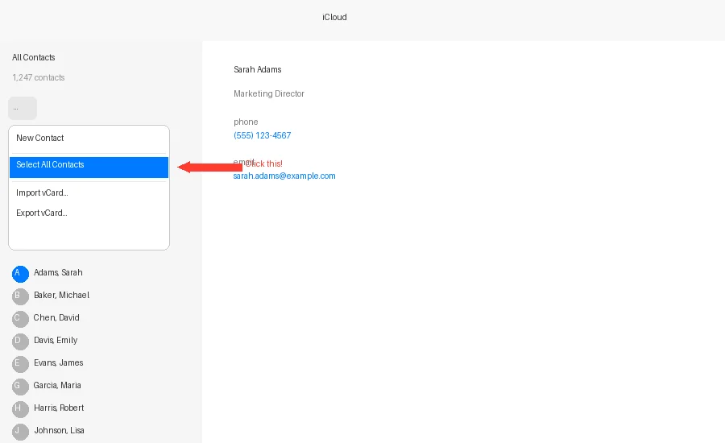
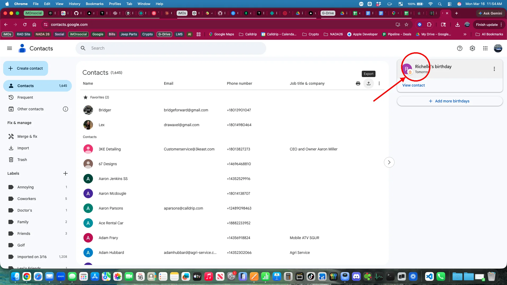
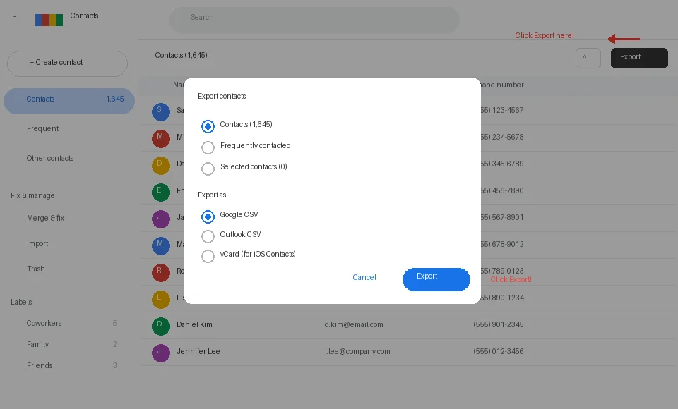

On a computer (not your phone), open a web browser and go to icloud.com. Sign in with your Apple ID and password, then click the Contacts app icon.
Once you're in iCloud Contacts, click the settings icon (gear) at the top left, then click "Select All Contacts". Once all contacts are highlighted, click the share icon (box with arrow) at the top right and choose "Export vCard". A .vcf file will download to your computer.

Go back to the Import Contacts screen in i'M On Social, tap "From File (CSV or VCF)", and select the .vcf file you just downloaded. You'll see a preview of all your contacts before importing.
Tip: Your contacts will be imported as personal contacts, meaning they stay with you even if you move to a different organization.
On a computer, open your browser and go to contacts.google.com. Sign in with your Google account if you're not already logged in.
Look for the "Export" button in the top-right area of your contacts list (next to the print icon). Click it.

In the Export dialog, make sure "Contacts" is selected at the top. Then choose either:
"Google CSV" for a spreadsheet file, or
"vCard (for Android or iOS)" for a vCard file.
Either format works. Click "Export" and the file will download.

Go back to the Import Contacts screen in i'M On Social, tap "From File (CSV or VCF)", and select the file you just downloaded. You'll see a preview of all your contacts before importing.
Tip: Your contacts will be imported as personal contacts, meaning they stay with you even if you move to a different organization.
Note: We'll automatically detect and match names, phone numbers, email addresses, birthdays, organizations, and addresses. Any duplicates will be flagged so you can choose whether to import them.